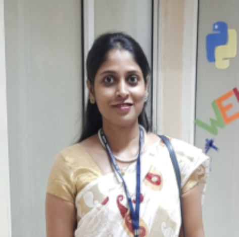

Prof. Ankita Kotalwar
Assistant Professor

Assistant Professor
My academic interests focus on neural networks, optimization techniques, and data-driven intelligent systems. Actively engages in teaching undergraduate courses while mentoring students in research-oriented projects. My research work aims to develop efficient and scalable deep learning models for real-world applications. Through publications, workshops, and collaborative research, I contribute to advancing AI education and innovation, while fostering critical thinking and practical skills among students.
Profiles